光能者
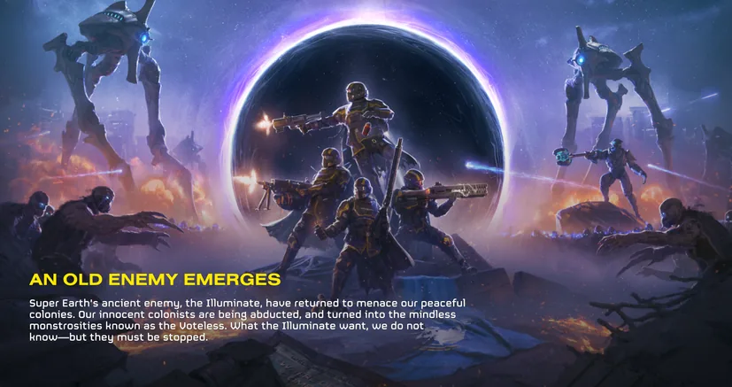
the  光能者 are one of three 阵营 the 绝地潜兵 can fight against, with the others being the
光能者 are one of three 阵营 the 绝地潜兵 can fight against, with the others being the  终结族 and the
终结族 and the  机器人. They have three subfactions: the
机器人. They have three subfactions: the 
 Mindless Masses,
Mindless Masses, 
 Appropriators and
Appropriators and 
 Vote Snatchers.
Vote Snatchers.
概述
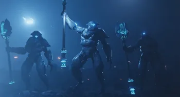
An 古代, “highly advanced” species, desperately seeking to reclaim their former galactic 霸权. These mind-controlling, xenophobic aliens cannot be reasoned with. They must all be killed.
— Playstation Store 描述
the 光能者 - colloquially known as Squids - are an 古代 hierarchical[1] alien species named Squ'ith who were originally 水生 in nature. Few in number, they possess exceptionally long lifespans (upwards of a thousand years[1]) and highly advanced technology - such as stealth and shielding capabilities.
Following their near-extinction[2][3] after the events of the 第一次银河战争, the surviving 光能者 fled outside  超级地球 controlled space into an 未知 portion of the galaxy[4]. They would eventually return to 联邦 space 100 years later via the
超级地球 controlled space into an 未知 portion of the galaxy[4]. They would eventually return to 联邦 space 100 years later via the  Meridian 虫洞.
Meridian 虫洞.
In terms of 玩法, the 光能者 utilize vast hordes of 无票者 and Fleshmobs to swarm the 绝地潜兵 while various 类型 of 监视者 攻击 from a 距离.
Extensive 玩法 data indicates that on 超级绝地俯冲 难度, the secondary 目标 on the 光能者 正面 are almost invariably A.SEAF 大炮, B.SEAF SAM Site, C.感知干扰器, D.雷达站, E.Purge 光能者, and F.摧毁 Rogue 研究 车站—with E and F alternating. Five secondary 目标 can appear on a 任务 (three during city operations).
背景故事
第一次银河战争
Before the 第一次银河战争, the  光能者 社会 had endured for 几个 数十万年. They first approached the
光能者 社会 had endured for 几个 数十万年. They first approached the  联邦 of 超级地球 with a peace offering[5], however the 联邦 accused them of possessing 武器 of 质量 摧毁 (WMDs) capable of destroying entire planets[6]. Using this supposed 威胁 as justification, humankind waged war against the 光能者 and ultimately defeated them. After their defeat, the 光能者 were forced to 交出他们的技术 before being almost completely exterminated by 超级地球.
联邦 of 超级地球 with a peace offering[5], however the 联邦 accused them of possessing 武器 of 质量 摧毁 (WMDs) capable of destroying entire planets[6]. Using this supposed 威胁 as justification, humankind waged war against the 光能者 and ultimately defeated them. After their defeat, the 光能者 were forced to 交出他们的技术 before being almost completely exterminated by 超级地球.
While 超级地球 believed them extinct, some 光能者 survivors fled into 未知 space, away from the 联邦's purview. This near-total eradication would drastically alter their 社会 during this period of isolation[7], as they would begin 密谋复仇.
第二次银河战争
100 years later, the creation of the  Meridian Wormhole would prompt the 光能者 to return to 联邦 space through it. At first, they remained hidden while abducting large amounts of colonists[8], but later revealed themselves with a 庞大 攻击 on Calypso. This 入侵 used 小型 squads of elite 监视者 supported by swarms of 无票者: zombie-like creatures created from abducted and mutated 超级地球 colonists. This brutal 攻击 was just barely repelled thanks to the efforts of the 绝地潜兵, but further 攻击 soon followed.
Meridian Wormhole would prompt the 光能者 to return to 联邦 space through it. At first, they remained hidden while abducting large amounts of colonists[8], but later revealed themselves with a 庞大 攻击 on Calypso. This 入侵 used 小型 squads of elite 监视者 supported by swarms of 无票者: zombie-like creatures created from abducted and mutated 超级地球 colonists. This brutal 攻击 was just barely repelled thanks to the efforts of the 绝地潜兵, but further 攻击 soon followed.
Throughout the months after their return, the 光能者 invaded 几个 planets in order to generate Dark 能量 to move the Meridian Wormhole - which destroyed Angel's Venture, Moradesh，以及 Ivis in its path towards 超级地球 itself. However 联邦 efforts, such as a partial blockade and deployment of the Penrose 能量 Siphon, slowed the Singularity; it was ultimately stopped with the activation of the Repulsive 重力 Field 发电机 shortly after the 摧毁 of Ivis. The 光能者 briefly vanished from the 银河地图 after the Wormhole was halted, in preparation of their incoming 入侵.
Shortly afterwards, a 庞大 光能者 入侵 armada - presumably built over 100 years[9] - known as The Great Host would emerge from the Meridian Wormhole and begin its march towards 超级地球 itself. The fleet first made landfall on Widow's Harbor, and brought with it new units to bolster the 光能者 入侵: the Stingray, Fleshmobs, and Crescent 监视者.
The 光能者 fleet reached the 太阳系 on May 20th, 2185. First razing Mars, then moving to 超级地球. Their forces began 攻击 on the seven 巨型城市 of 超级地球, first landing on 鹰都. They were eventually defeated and retreated to the southern 星区, hidden from 超级地球's detection until their cloaking methods were revealed.
On 2186年3月17日, the 
 Appropriators, a subfaction of the 光能者 that fields only Squ'ith units and piloted constructs, would be detected setting up 异界尖塔 powered by Dark Fluid from the ruins on Seasse, creating an Exostorm that sent a purple beam into the sky, stirring the 天气 across the 行星 and affecting its atmospheric 正直. Despite suffering casualties from 绝地潜兵 操作 on the 行星, the 光能者 succeeded in their goal, enveloping the entire system in what would be called The Void.
Appropriators, a subfaction of the 光能者 that fields only Squ'ith units and piloted constructs, would be detected setting up 异界尖塔 powered by Dark Fluid from the ruins on Seasse, creating an Exostorm that sent a purple beam into the sky, stirring the 天气 across the 行星 and affecting its atmospheric 正直. Despite suffering casualties from 绝地潜兵 操作 on the 行星, the 光能者 succeeded in their goal, enveloping the entire system in what would be called The Void.
几个 hours after The Void came into existence, the 
 Appropriators arrived at Hort, 设置额外虚空尖塔以扩张虚空 while simutaneously, the
Appropriators arrived at Hort, 设置额外虚空尖塔以扩张虚空 while simutaneously, the 
 Mindless Masses, a subfaction of the 光能者 that had 已增加 prescene of 无票者 and Fleshmobs, launched an 攻击 on Rirga Bay.
Mindless Masses, a subfaction of the 光能者 that had 已增加 prescene of 无票者 and Fleshmobs, launched an 攻击 on Rirga Bay.
语言
The 光能者 alphabet and their 语言 use glyphs[10]. However, their 阵营 symbol  has been revealed to be a stylized glyph of the 光能者’s word for themselves. [11]
has been revealed to be a stylized glyph of the 光能者’s word for themselves. [11]
光能者单位列表
标准光能者
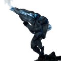
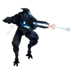
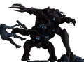
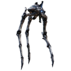
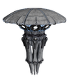
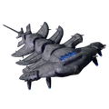
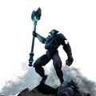
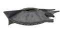
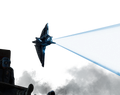
Appropriators
窃票者
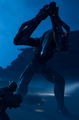
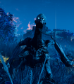
光能者设施列表
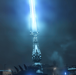
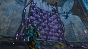
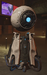
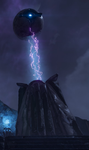
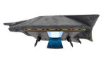
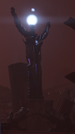
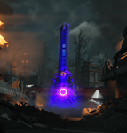
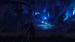
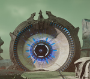
战术信息
- Most Illuminates have a low 护甲值 in exchange for being fairly tanky. 绝地潜兵 should primarily invest in high-每秒伤害 装备 over high-穿透 装备.
- The 光能者 reward fast and agile 玩法 for a number of reasons:
- Compared to 小型 终结族, 无票者 move slower, have a shorter lunge 射程, and are incapable of leaping at 敌人. 轻型 绝地潜兵 can often simply run past them without much hassle.
- 远程 Illuminates 通常 either have low 速率 projectiles or low "人体工学", 频繁 allowing 绝地潜兵 to sidestep or outright outrun them.
- Many Illuminates are equipped with 护盾 or 护甲板 that nullify or reduce overkill 伤害, punishing single, powerful shots while rewarding continuous, incremental 伤害.
- Illuminates can only be reinforced by 守望者; 小型, agile, flying 敌人 that are relatively 困难 to kill for their size. They hover above the battlefield, weaving between structures and 出现中 when least expected. Because of this, 目标 prioritization is 键 when fighting on the 光能者 正面; 绝地潜兵 cannot simply rely on them being hit by a stray bullet in the heat of battle like 敌人 that can call for 增援 on the other fronts.
- Other than some 例外, non-城市 光能者 missions always have 殖民地 megastructures. 绝地潜兵 should 通常 be prepared for close quarters combat.
- Despite this 基本信息 rule, the exact 百分比 of the 任务 area that is occupied by a colony, as well as the number of 目标 in the colony, can differ drastically from 任务 to 任务. 绝地潜兵 should always make sure to 查看 the map before making a final decision on their 武装配置.
- Illuminates 频繁 use 爆炸 伤害 and commonly use 弧度 伤害. 绝地潜兵 should plan accordingly.
- Some Illuminates have asymmetrical 结构解析, which can mildly alter how 绝地潜兵 combat them. In particular:
- 光能者营地 are large, owing in part to the size of 停靠的跃迁舰. This has a few implications:
- 光能者 Encampments spawn in far fewer number than 哨站 for the other 阵营, often as little as 2 on certain difficulties.
- Due to the size of Grounded Warp Ships, they are fairly 容易 to 干掉 with 轨道武器 Barrages.
琐事
- They were made available to fight immediately after their reveal at The Game Awards 2024 on 12月 13th, 2024.
- 超级地球 频繁 calls the 光能者 社会 "Autocratic" despite 否 证据 of this claim being present anywhere in the game.
- UFO sightings during the 21st 世纪 were 实际上 光能者 recon ships[12].
- It is 未知 how the surviving 光能者 were treated after their defeat. Some sources state that a genocide took place and they were believed exterminated, while others state that they were displaced outside the galaxy.
- Some of the 光能者 technology is seemingly biotechnological in nature. This can be observed on the Leviathan's internals being fleshy, as well as various autonomous units 出血 as they die:
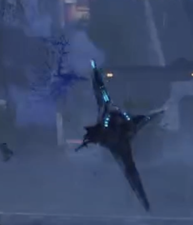
A 守望者 流血 as it dies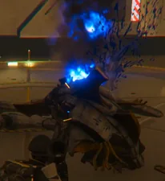
A 猎杀器 流血 as it dies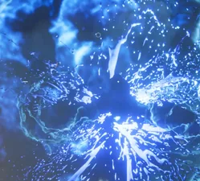
A Stingray 流血 as it dies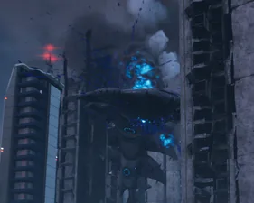
A Leviathan 流血 as it dies
- Squ'ith do not possess eyelids in the 陆生 sense, and they cannot blink like humans. [11]
海报
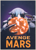
Avenge Mars on May 20th, 2025.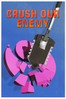
Crush our Enemy on May 27th, 2025.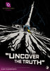
Uncover the Truth on March 21st, 2026.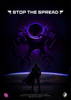
Stop the 散射 on March 28th, 2026.
变更历史
1.003.000
2025-05-13
New units
- 已添加 Stingray, Fleshmob and Crescent 监视者.
1.002.001
2024-12-13
已加入游戏。
参考资料
- ↑ 1.0 1.1 民主官: "According to 历史 texts, the 光能者 社会 is strictly hierarchical. Their leaders may be over a thousand years old. But 古代 though they may be, their return has sealed their doom."
- ↑ 民主官: "We defeated the 光能者 in the 第一次银河战争, but were too lenient in our cleansing of their viscous imprint. Now we pay the price."
- ↑ Strohmann News 广播: "The advanced and highly xenophobic beings were 思想 exterminated in the 第一次银河战争 (...)"
- ↑ 民主官:"It seems that the black hole created by the Dark Fluid was in fact a wormhole, to some dark depths of the galaxy in which the 光能者 were hidden."
- ↑ 绝地潜兵 1, Science 军官: "The Illuminates consider themselves enlightened, hence the name. They initially came to earth with a treacherous peace offering which later turned out to be false as they had large quantities of world-destroying devices nicknamed 'obliterator 炸弹'. Needless to say, the only sensible 解决方案 was to wipe them out with a preemptive strike."
- ↑ 绝地潜兵 1, War Declared: 光能者: " 'We have reason to believe the Illuminates have 武器 of 质量 摧毁, capable of destroying entire planets' stated house 代表 Powley Colle. He continued 'Every 声明 I make today is backed up by reliable sources' "
- ↑ "💯 And the illuminates that survived probably don't have any issues with their ancestors' soft and apathetic approach to 人类 that resulted in their millenia long stewardship of the galaxy being lost." Anyone else notice how 光能者 are a LOT more... brutal this time around?by Pilestdt. Published on 12月 24th, 2024.
- ↑ 民主官: "The 谜团 of our vanishing colonists is at last solved. They were abducted by the 光能者, and transfigured into the betentacled assailants with which we must now contend."
- ↑ 民主官: "The 光能者 likely spent the past hundred years constructing this fleet. Its gargantuan size is a reflection of our enemy's hatred for all things Free."
- ↑ [Baskinator] (July 10, 2026). "They can communicate... They sure make an awful racket, so I assume that's them yapping.
Their 语言 使用次数 glyphs. We don't have a 完成 翻译 of their symbols available.
But I have shared with this group that :hd2squid: is their symbol for themselves." (message) – via Discord. 绝地潜兵™ 官员 Discord, 频道: #背景. Thread: 无. - ↑ 11.0 11.1 Conversation between Community Manager Baskinator and Discord user Charon regarding 光能者 eyelids and their 阵营 symbol.
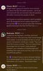
Conversation between Baskinator and Charon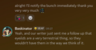
Conversation continued
- ↑ 绝地潜兵 1: Science 军官: "The 光能者 have had settlements in this galaxy for millennia. In the late 21st 世纪 there were plenty of 光能者 recon ship sightings, but these were dismissed as 民间传说 back then."